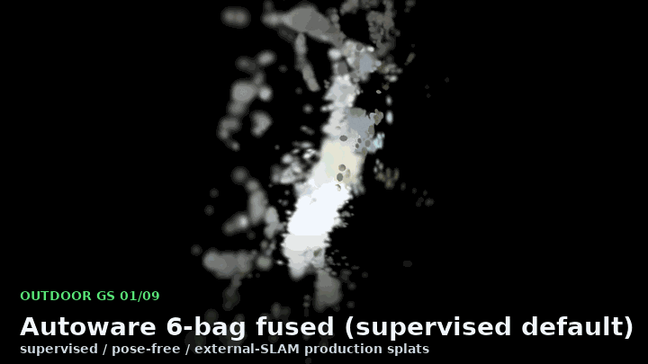

Audience: 3DGS, SLAM, robotics, and Physical AI builders who want a fast demo link.
Angle: Lead with the live viewer, then mention policy benchmarks and CI artifacts.
short-social

GS Mapper turns photos, robotics logs, and MASt3R-SLAM / VGGT-SLAM 2.0 / Pi3 / LoGeR artifacts into browser-viewable Gaussian splats, scene contracts, route-policy benchmarks, and CI review bundles for Physical AI evaluation.
Real robot data to Gaussian-splat Physical AI benchmarks.
Suggested launch targets with the audience, angle, and copy block to start from.
Audience: 3DGS, SLAM, robotics, and Physical AI builders who want a fast demo link.
Angle: Lead with the live viewer, then mention policy benchmarks and CI artifacts.
short-social
Audience: Graphics, mapping, robotics, simulation, and developer-tool readers who inspect repos.
Angle: Frame it as an open-source bridge from real robot data to reproducible evaluation artifacts.
community-post
Audience: Robotics, autonomy, geospatial, and simulation engineers.
Angle: Emphasize policy regression, reviewable simulation artifacts, and SLAM-to-benchmark handoff.
technical-social
Audience: Subreddits around Gaussian Splatting, photogrammetry, 3D scanning, robotics, and ML systems.
Angle: Pick one relevant community, check its rules, and post the community copy with screenshots.
community-post
Audience: Maintainers of curated 3DGS, SLAM, robotics, simulation, and Physical AI resource lists.
Angle: Open a small PR with the awesome-list entry and link directly to the live demo and README.
awesome-list
Audience: Japanese robotics, mapping, autonomy, and computer-vision builders.
Angle: Use the Japanese announcement and point people to the live splat viewer and benchmark docs.
japanese
Channel-specific copy for launch posts, community threads, and awesome-list pull requests.